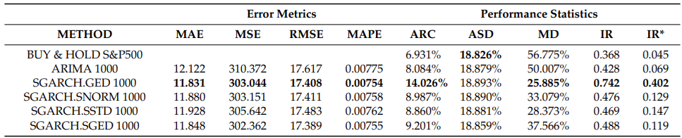
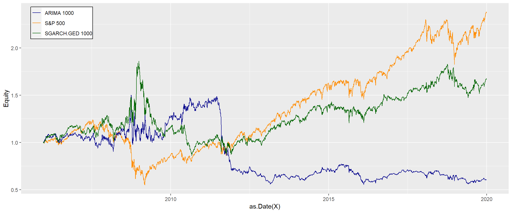

Aim of the study
We based our research on the article Applying Hybrid ARIMA-SGARCH in Algorithmic Investment Strategies on S&P500 Index by Nguyen Vo and Robert Slepaczuk.
Our study aims to evaluate and compare the effectiveness of the ARIMA model and its hybrid combinations with GARCH family models (specifically SGARCH and EGARCH) in forecasting the log returns of the S&P500 index. The research utilizes daily data from Yahoo Finance, spanning from January 1, 2000, to December 31, 2019. Through a rolling window approach, the study investigates whether these hybrid models can better capture the time-series characteristics and offer superior predictive power compared to the standalone ARIMA model. The models are assessed based on their forecasting accuracy (using metrics such as MAE, MAPE, RMSE) and performance (including annualized return, annualized standard deviation, maximum drawdown, information ratio, and adjusted information ratio). The findings indicate that the hybrid models significantly outperform the ARIMA model and the Buy&Hold strategy over the long term, with results remaining robust across different window sizes, distribution types, and GARCH model variations.
Framework of our research
Our research was divided into five parts, each documented in a separate notebook. In the first notebook, we focused on downloading S&P 500 data. The second notebook was dedicated to estimating ARIMA models. In the third notebook, we conducted sensitivity analysis. The fourth notebook is focused on calculating equity line and performance metrics for base case and performing sensitivity analysis. Finally, in the fifth notebook, we provided a comprehensive summary of our findings and compared our results with those presented in the source article that served as the basis for our research.
Data Collection for S&P 500 Index
We collected historical data for the S&P 500 index from Yahoo Finance to ensure a reliable basis for our hybrid ARIMA-GARCH model analysis. The data spans from January 1, 2000, to December 31, 2019. Using the quantmod package in R, we downloaded the adjusted closing prices. From these, we calculated both logarithmic returns and simple returns to prepare the dataset for model fitting and forecasting.
Statistics
Our results
Results from the article
Conclusion
The tables presented in the images show descriptive statistics of the S&P 500 adjusted prices and log returns. The first table is produced by our group, and the second table is sourced from an article that we based our research on.
Upon comparison, it is clear that there are no differences in the reported statistics between the two tables. Both sets of statistics are identical, which indicates that our results align perfectly with those from the article.
The consistency between the results from our analysis and those from the article demonstrates that our analysis is accurate and reliable. This alignment confirms the robustness of our methods and calculations in deriving the descriptive statistics for the S&P 500 adjusted prices and log returns.
Model estimation
Below are listed functions we have defined for our research purposes.
fit_best_arima- This function finds and fits the best ARIMA model. It searches through different combinations of p and q orders up to 5. The function returns the best ARIMA model based on the Akaike Information Criterion (AIC) .
arima_rolling_forecast - This function performs a rolling forecast using the best ARIMA model. It fits the best ARIMA model to each rolling window of data, and forecasts the next value. It can optionally log the process and show a progress bar.
fit_best_arima_garch - This function finds and fits the best ARIMA-GARCH model. It searches through different combinations of p and q orders for the ARIMA model and uses a specified GARCH model (g_model) and distribution. The function returns the best ARIMA-GARCH model based on the Akaike Information Criterion (AIC).
arima_garch_rolling_forecast - This function performs a rolling forecast using the best ARIMA-GARCH model. It fits the best ARIMA-GARCH model to each rolling window of data, and forecasts the next value. It can optionally log the process and show a progress bar. The function handles errors by attempting to refit the model with scaled data.
Results comparison and final conclusions
Performance statistics
Base case
Obtained performance statistics of ARIMA(p,1,q) & ARIMA(p,1,q)-SGARCH(1,1).
Obtained performance statistics of ARIMA(p,1,q) & ARIMA(p,1,q)-EGARCH(1,1).

Obtained performance statistics of ARIMA(p,1,q)-SGARCH(1,1) with different window sizes.
Obtained performance statistics of all hybrid models with different distributions.

Equity lines
Base case

EGARCH vs SGARCH

Different window sizes
Warning: Removed 490 rows containing missing values (`geom_line()`).Different distributions
Problems encountered
Time series order
in article it was specified that log returns of S&P500 are forecasted. In further parts author mentions using model ARIMA(p,1,q) suggesting that original time series was integrated of order 1 - meaning that they were differenced once. Additionally there were parts where model ARMA was mentioned - with no integration.
Our solution
From our point of view there is no reason to difference time series that were converted to log returns - plots of log returns suggest stationary time series, no tests were provided for stationarity of time series in the article. For our models we used log returns of S&P500
Computational efficiency
In the artcle the best model was chosen based on AIC. In order to choose best p and q orders - 35 models were fitted. One step ahead forecasts were calculated for period between 20 December 2005 and 30 December 2019 - 3530 forecast vectors. In total foracasting using one models means checking 35*3530 = 123.550 models. Additionally, eight different forecasts were made using various models.
Our solution
In our notebooks we implemented parallel computing to be able to use multiple cores at which significantly speed up our calculations.
Convergence problem
While running multiple models, we encountered an issue with the rugarch package. During the fitting and forecasting loops, the process was interrupted due to convergence problems. This issue caused our joobs to break.
Our solution
To deal with this issue we used many tryCatch expressions, Having encountered predefined errors tryCatch would either skip the loop iteration or return NA, preventing the job from breaking completely. Additionally, we generated log files to track the errors.
References
Vo, N., & Ślepaczuk, R. (2022). Applying hybrid ARIMA-SGARCH in algorithmic investment strategies on S&P500 index. Entropy, 24(2), 158.
Appendix